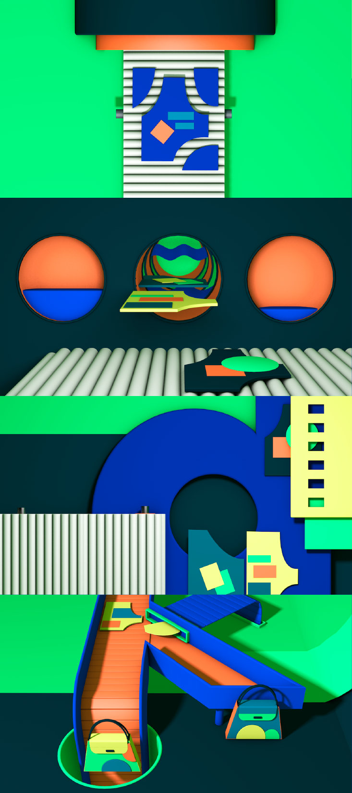

누깍(Nukkak)

2019년 (3D 입체 애니메이션)
업사이클링 브랜드 ‘Nukkak (누깍)’은 바르셀로나 길거리에 버려지는 방수 소재 포스터와 폐타이어로 새로운 가치를 만들어내는 브랜드이다. 바르셀로나나 마드리드와 같은 도시의 가로등에서 걸려온 캠페인 포스터를 재사용하기 때문에 동일한 가방은 찾을 수 없다는 것이 특징이다. 브랜드 이미지에 맞도록, 복잡한 업사이클링 과정을 기본 도형을 활용하여 간결하게 표현하였다.
2019년 (3D 입체 애니메이션)
업사이클링 브랜드 ‘Nukkak (누깍)’은 바르셀로나 길거리에 버려지는 방수 소재 포스터와 폐타이어로 새로운 가치를 만들어내는 브랜드이다. 바르셀로나나 마드리드와 같은 도시의 가로등에서 걸려온 캠페인 포스터를 재사용하기 때문에 동일한 가방은 찾을 수 없다는 것이 특징이다. 브랜드 이미지에 맞도록, 복잡한 업사이클링 과정을 기본 도형을 활용하여 간결하게 표현하였다.